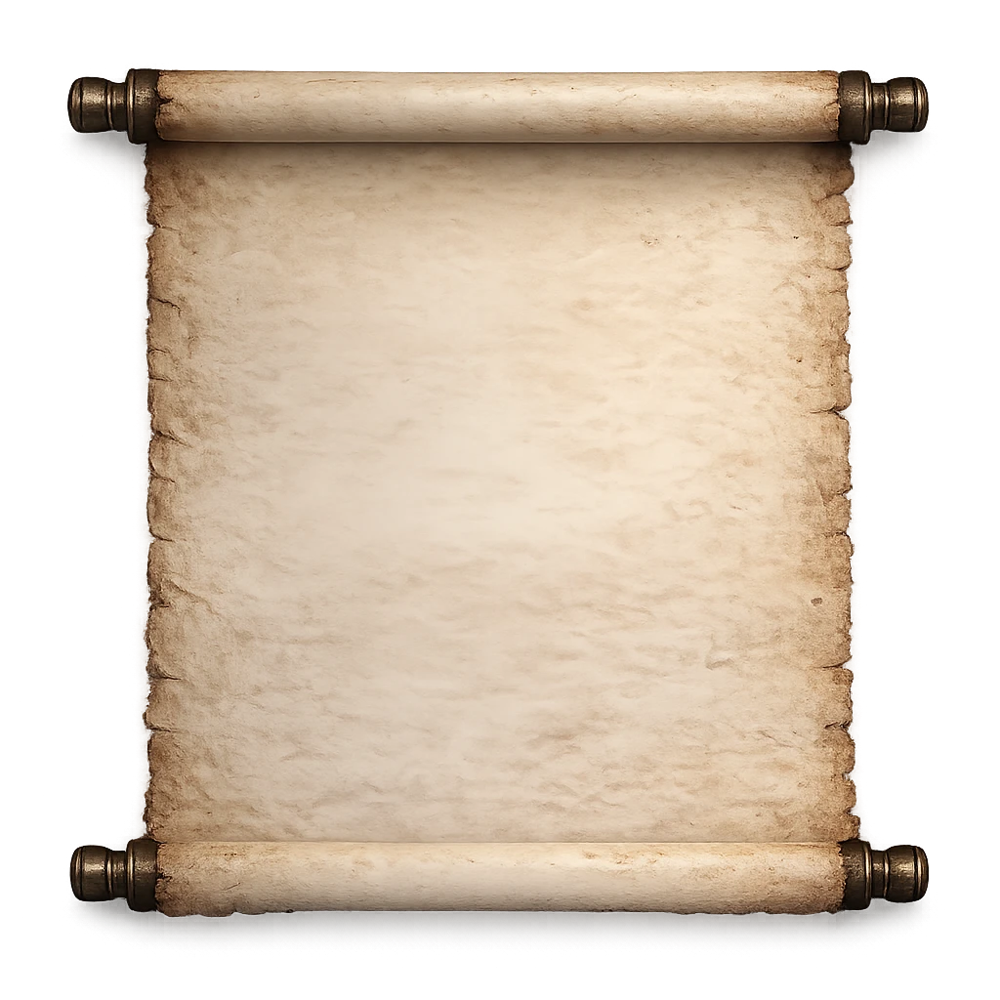

Scriptorium Chamber
Step lightly. Not every record wishes to be found.
The Scriptorium of Velis was once the greatest archive of the western kingdoms. Its shelves held records copied across centuries — accounts of wars, bindings, oaths, and the quiet work of those who guarded the world from darker things.
Much of the original archive was lost when Velis fell. What remains here are fragments gathered by later hands: keeper records, copied scrolls, damaged chronicles, and whispers of truths the world has long forgotten.
Nearly a thousand years ago the being now called the Godbeast was bound beneath the earth by a gathering of mages and wardens.
The act reshaped the fate of kingdoms and led to the creation of the watchers who would guard the prison in secret.
Even now, the full truth of that night is debated.

The hounds were not always bound as they are now. Before the Joining, they were something else — something closer to the old world than the one we walk in today.
What was done to them was not cruelty. It was necessity.